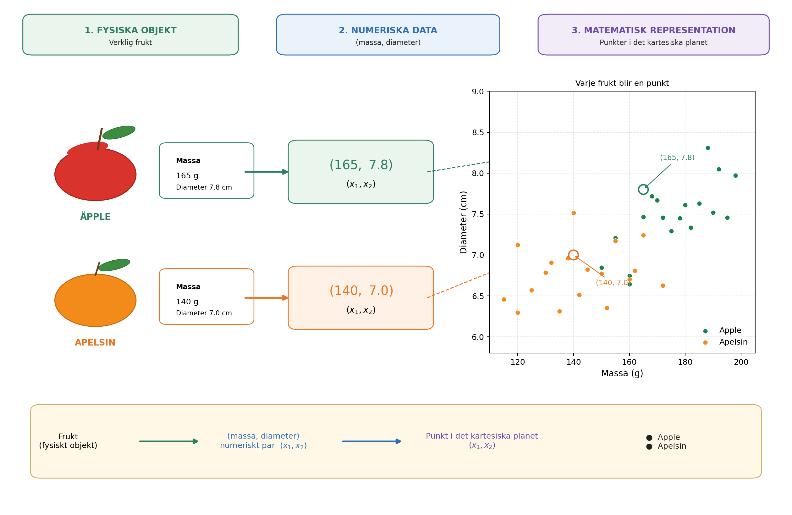
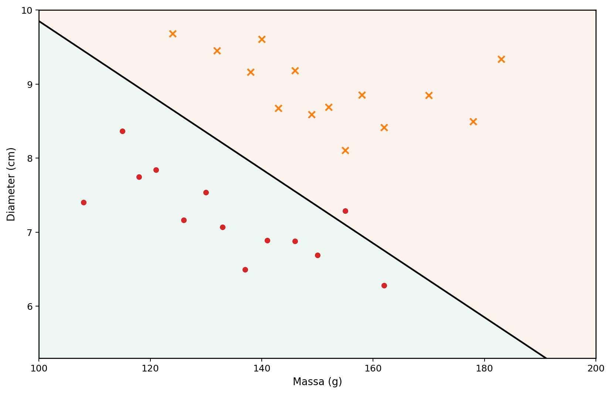
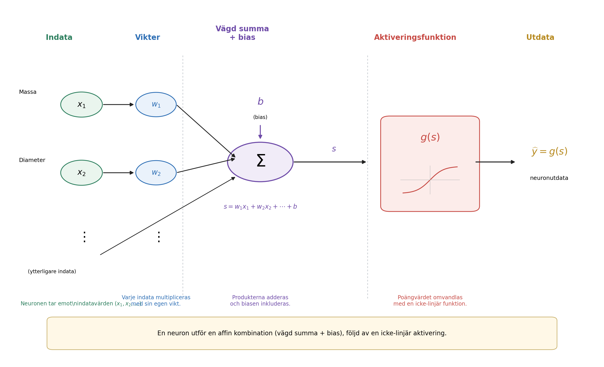
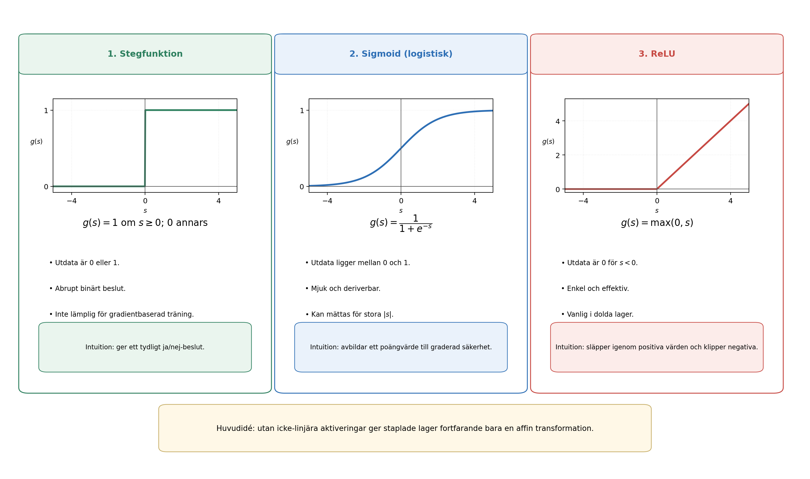
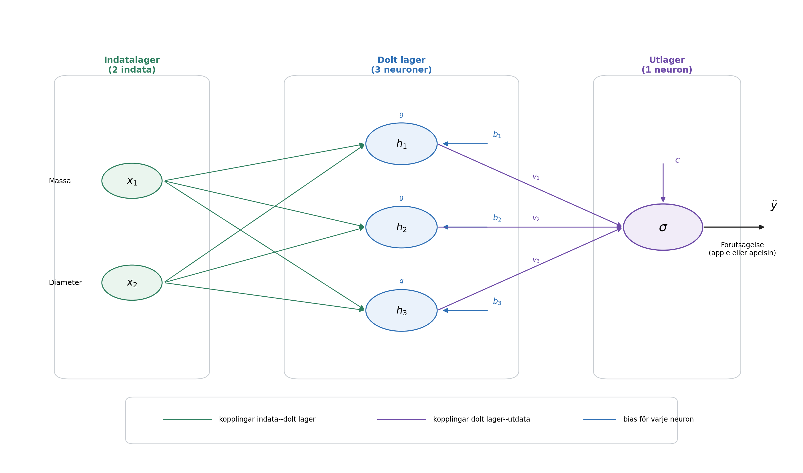
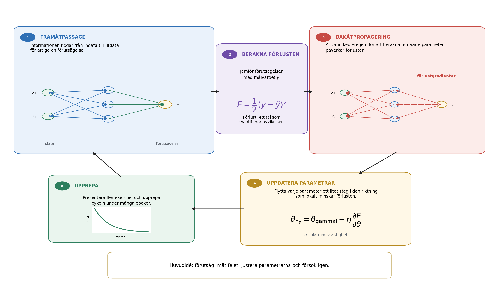
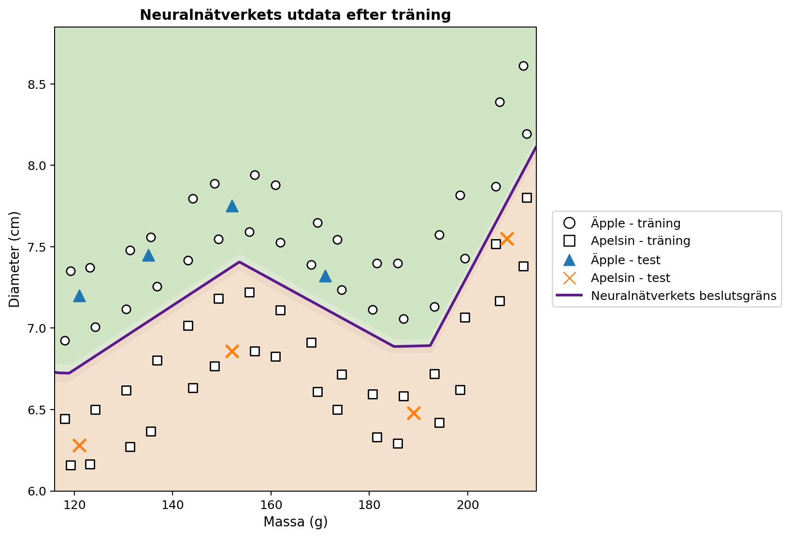

När kan en dator lära sig?
I vardagen fattar vi klassificeringsbeslut nästan utan att märka det. När vi ser en frukt identifierar vi den snabbt som ett äpple eller en apelsin; när ett meddelande kommer till telefonen skiljer vi ett legitimt samtal från oönskad reklam; i medicinska analyser kan flera mätningar kombineras för att stödja ett beslut; och i finansiella institutioner bedöms flera uppgifter innan kredit beviljas. I alla dessa exempel vägs flera egenskaper samman för att ge ett svar.
I många traditionella datorprogram skrivs reglerna som ger detta svar uttryckligen av programmeraren. Detta fungerar bra när reglerna är kända och kan formuleras tydligt. Metoden blir mindre effektiv när data varierar mycket eller när det är svårt att i förväg formulera alla villkor som krävs för ett bra beslut. Det leder till en naturlig fråga:
Kan vi bygga ett program som lär sig en beslutsregel från exempel i stället för att få regeln given i förväg?
Detta är en av de centrala idéerna inom maskininlärning, ett område inom artificiell intelligens som behandlar metoder för att anpassa modeller till data . I ett övervakat inlärningsproblem får algoritmen exempel tillsammans med deras korrekta svar, och vi söker en modell som också kan ge användbara förutsägelser för fall som inte användes under träningen. Bland de många modeller som utvecklats för detta ändamål har artificiella neurala nätverk blivit viktiga i tillämpningar som bildigenkänning, språkbehandling, signalanalys och tidsserieprognoser .
Användningen av neurala nätverk som en bro mellan matematik, beräkningar och skolundervisning har redan diskuterats i Professor de Matemática Online av Batista och Martins , som presenterar en aktivitet med lärarutbildning, Python och sifferigenkänning. Den här artikeln följer en kompletterande väg. Vårt huvudmål är att synliggöra den interna matematiken i ett litet neuralt nätverk, med början i analytisk geometri och stegvis vidare till gradientberäkning och en manuell implementering av bakåtpropagering.
Trots sofistikationen i moderna tillämpningar kan den matematiska kärnan i ett neuralt nätverk introduceras med relativt välkända idéer. På en grundläggande nivå är ett neuralt nätverk en sammansättning av funktioner vars parametrar anpassas utifrån data. Vi börjar med ett enkelt geometriskt problem, tolkar om en separerande linje som en artificiell neuron, kopplar samman flera neuroner, studerar aktiveringsfunktionernas roll och visar hur derivator kan användas för att automatiskt justera nätverkets parametrar. Därefter implementerar vi ett komplett litet exempel i Python med en direkt motsvarighet mellan ekvationerna och koden.
Att representera problemet matematiskt
För att förstå hur ett neuralt nätverk fungerar börjar vi med ett avsiktligt enkelt problem: att skilja äpplen från apelsiner. En frukt har många egenskaper som kan vara användbara för denna uppgift, exempelvis färg, massa, diameter, textur och arom. En första matematisk modell behöver dock inte omfatta all denna komplexitet. Vi använder endast två lätt mätbara storheter: massa i gram och diameter i centimeter.
Varje frukt representeras därför av ett ordnat par \[(x_1,x_2),\] where \[x_1=\text{massa} \qquad\text{and}\qquad x_2=\text{diameter}.\]
Paret \((155,\;7.2)\) representerar alltså en frukt med massan \(155\) g och diametern \(7.2\) cm. Genom att ersätta det fysiska objektet med två numeriska mätvärden associerar vi varje frukt med en punkt i det kartesiska planet: den första koordinaten anger massan och den andra diametern. Figur 1 illustrerar denna representation för en hypotetisk uppsättning äpplen och apelsiner.

Denna omvandling förändrar problemets skenbara natur. I stället för att direkt fråga hur man känner igen ett äpple eller en apelsin kan vi ställa en geometrisk fråga: hur kan punkterna som tillhör de två klasserna separeras i planet? Detta perspektivskifte är grundläggande inom maskininlärning. Bilder, texter, ljud och experimentella signaler måste alla omvandlas till numeriska representationer innan de kan behandlas av en algoritm. I vårt exempel har varje objekt bara två koordinater; i verkliga tillämpningar kan en representation innehålla hundratals, tusentals eller till och med miljontals komponenter. Principen är densamma: varje exempel associeras med en samling tal, och modellen söker en regel som avbildar denna representation till det önskade svaret.
Vi börjar med den enklaste tillgängliga geometriska regeln och frågar om en enda rät linje kan separera äppelpunkterna från apelsinpunkterna på ett tillfredsställande sätt.
En rät linje som klassificerare
När varje frukt har representerats av en punkt i det kartesiska planet blir klassificeringen ett geometriskt problem: kan en rät linje separera äpplena från apelsinerna? Denna fråga fångar grundidén i en viktig familj av maskininlärningsmetoder som kallas linjära klassificerare.
Betrakta en linje som går genom punktmolnet, som i Figur 2. Linjen delar planet i två halvplan. Om de flesta äppelpunkterna ligger på ena sidan och de flesta apelsinpunkterna på den andra kan en ny frukts position relativt linjen användas som klassificeringsregel. Efter att dess massa och diameter har mätts representerar vi frukten med en punkt och bestämmer på vilken sida av linjen punkten ligger.

I det kartesiska planet \((x_1,x_2)\) kan en linje beskrivas av \[w_1x_1+w_2x_2+b=0, \qquad (w_1,w_2)\neq(0,0).\]
Vektorn \((w_1,w_2)\) är vinkelrät mot linjen och bestämmer därför dess orientering, medan parametern \(b\) bidrar till dess läge. Denna representation har en liten redundans: om \(w_1\), \(w_2\) och \(b\) multipliceras med samma icke-nollkonstant fås exakt samma linje. Parametrarna som beskriver gränsen är alltså inte entydiga. Deras numeriska tolkning beror också på variablernas skalor. Eftersom massa mäts i gram och diameter i centimeter bör storleken på \(w_1\) och \(w_2\) inte jämföras utan hänsyn till de olika enheterna.
Linjeekvationen ger i sig ett enkelt sätt att avgöra på vilken sida av gränsen en punkt ligger. Definiera poängvärdet \[s(x_1,x_2)=w_1x_1+w_2x_2+b.\]
Om \(s(x_1,x_2)=0\) ligger punkten på linjen. Om \(s(x_1,x_2)>0\) ligger den i det ena halvplanet, och om \(s(x_1,x_2)<0\) ligger den i det andra. Om vi bestämmer att positiva poängvärden motsvarar äpplen och negativa poängvärden apelsiner blir regeln \[\begin{cases} s(x_1,x_2)\geq 0 & \Longrightarrow \text{äpple},\\ s(x_1,x_2)<0 & \Longrightarrow \text{apelsin}. \end{cases}\]
Betrakta till exempel gränsen som definieras av \[w_1=\frac{1}{10}, \qquad w_2=2, \qquad b=-30.\] För en frukt med massan \(160\) g och diametern \(7.8\) cm gäller \[\begin{aligned} s &=\frac{1}{10}\times160+2\times7.8-30\\ &=16+15.6-30\\ &=1.6. \end{aligned}\] Eftersom poängvärdet är positivt ligger punkten i det halvplan som vi har associerat med äpplen. Klassificeraren skulle därför märka frukten som ett äpple.
Inte varje val av \(w_1\), \(w_2\) och \(b\) ger en bra klassificering. Vissa linjer separerar de två grupperna dåligt, medan andra ger färre fel. Inlärningsproblemet består just i att använda tidigare etiketterade exempel för att bestämma parametervärden som minskar ett mått på modellens fel. I stället för att programmera linjens läge direkt vill vi att algoritmen justerar dess koefficienter utifrån data.
En enda linje kan fungera bra när klasserna är ungefär linjärt separerbara. Mer komplicerade datamängder kan kräva en icke-linjär gräns. Innan vi behandlar den begränsningen tolkar vi om den nyss konstruerade klassificeraren som en elementär beräkningsenhet: en artificiell neuron.
Den artificiella neuronen
I föregående avsnitt användes uttrycket \[s=w_1x_1+w_2x_2+b\] för att avgöra på vilken sida av en linje en frukt ligger. Samma uttryck kan ses som det första steget i beräkningen som utförs av en artificiell neuron. En neuron tar emot numeriska indata, kombinerar dem med hjälp av vikter och en bias och applicerar därefter en matematisk funktion för att få sin utdata.
I vårt exempel är indata massan \(x_1\) och diametern \(x_2\). Varje indata multipliceras med en parameter som kallas en vikt; produkterna adderas tillsammans med en konstant term \(b\), kallad bias. Figur 3 visar denna beräkning schematiskt.

Vikterna bestämmer hur förändringar i indata påverkar poängvärdet. Om \(x_2\) och alla andra storheter hålls fasta ändrar en variation \(\Delta x_1\) värdet på \(s\) med \(w_1\Delta x_1\). På motsvarande sätt ändrar en variation \(\Delta x_2\) poängvärdet med \(w_2\Delta x_2\). Även tecknet spelar roll: en positiv vikt gör att en ökning av indata ökar poängvärdet, medan en negativ vikt ger motsatt effekt. Denna tolkning måste användas försiktigt när olika variabler har olika enheter och skalor. Därför normaliserar eller standardiserar praktiska implementationer ofta sina indata före träning.
Biasen \(b\) är den konstanta termen i den affina transformationen. Geometriskt gör den det möjligt att förskjuta beslutsgränsen. Om \(b=0\) tvingar ekvationen \[w_1x_1+w_2x_2=0\] linjen att gå genom origo. Med en bias kan gränsen flyttas till andra lägen. Ekvivalent gäller att när \(x_1=x_2=0\) är poängvärdet helt enkelt \(s=b\).
Poängvärdet behöver inte vara neuronens slutliga utdata. I allmänhet appliceras en aktiveringsfunktion \(g\) på det: \[\widehat{y}=g(s)=g\left(w_1x_1+w_2x_2+b\right).\] Beräkningen har alltså två steg, \[\begin{aligned} s &= w_1x_1+w_2x_2+b,\\[4pt] \widehat{y} &= g(s). \end{aligned}\]
Med parametervärdena från föregående avsnitt får vi \(s=1.6\). Om vi väljer stegfunktionen \[g(s)= \begin{cases} 1, & s\geq0,\\ 0, & s<0, \end{cases}\] blir \(\widehat{y}=g(1.6)=1\). Enligt vår konvention klassificeras frukten som ett äpple. Med denna aktivering ändras beslutet när \(s\) passerar noll, så klassgränsen är exakt \[w_1x_1+w_2x_2+b=0.\]
En enskild neuron är alltså ett enkelt matematiskt objekt med justerbara parametrar. Dess verkliga betydelse framträder när många sådana enheter kopplas samman. Innan vi bygger ett nätverk behöver vi dock förstå varför aktiveringsfunktionen är avgörande.
Varför behöver vi en aktiveringsfunktion?
En neuron beräknar först ett poängvärde med en affin transformation och applicerar därefter en aktiveringsfunktion. Detta andra steg är avgörande för att ett neuralt nätverk ska kunna representera komplicerade samband. För att se varför kan vi tänka oss ett nätverk utan aktiveringsfunktioner. Varje enhet skulle då ha formen \[y=w_1x_1+w_2x_2+b.\]
Som ett endimensionellt exempel, anta att en första enhet ger \[h=ax+b\] och att en andra beräknar \[y=ch+d.\] Insättning ger \[y=c(ax+b)+d=acx+(cb+d),\] vilket fortfarande är en affin funktion av \(x\). Samma påstående gäller i flera dimensioner: en sammansättning av affina transformationer är fortfarande affin. Att lägga till många lager utan en icke-linjär operation gör därför inte nätverket i grunden mer uttrycksfullt; hela sammansättningen skulle kunna ersättas av en enda affin transformation.
En aktiveringsfunktion bryter denna begränsning. Efter att ha beräknat poängvärdet \(s\) applicerar neuronen en vanligen icke-linjär avbildning \[h=g(s).\] När flera sådana enheter kopplas samman kan den resulterande sammansättningen inte längre reduceras till en enda affin transformation. Därmed kan nätverket konstruera mer komplicerade beslutsgränser.
Den enklaste aktiveringen är stegfunktionen, \[g(s)= \begin{cases} 1, & s\geq0,\\ 0, & s<0. \end{cases}\] Den ger ett binärt beslut och är mycket användbar för att förstå klassificering. Dess derivata är emellertid noll för \(s\neq0\) och odefinierad vid \(s=0\). Eftersom gradientbaserad träning använder derivator för att avgöra hur parametrarna ska ändras är stegfunktionen inte lämplig för denna träningsmekanism.
Ett alternativ är sigmoidfunktionen, \[\sigma(s)=\frac{1}{1+e^{-s}}.\] Den avbildar varje reellt tal till ett värde strikt mellan \(0\) och \(1\). För mycket negativa \(s\) närmar sig utdata \(0\); för mycket positiva \(s\) närmar de sig \(1\); mellan dessa ytterligheter är övergången mjuk. Sigmoidfunktionen är deriverbar överallt, med \[\sigma'(s)=\sigma(s)\bigl(1-\sigma(s)\bigr).\] Eftersom dess utdata ligger mellan \(0\) och \(1\) används den ofta i utlagret hos en binär klassificerare. Med en probabilistisk formulering och en lämplig förlustfunktion kan utdata tolkas som en skattning av sannolikheten för klassen som representeras av \(1\). I dolda lager kan sigmoidfunktionen dock skapa ett problem: för indata med stort absolutbelopp blir derivatan mycket liten, vilket bidrar till problemet med försvinnande gradienter i djupa nätverk.
En ofta använd aktivering i dolda lager är ReLU (Rectified Linear Unit), \[\operatorname{ReLU}(s)=\max(0,s) = \begin{cases} 0, & s<0,\\ s, & s\geq0. \end{cases}\] Även om ReLU består av två linjära delar är funktionen inte globalt linjär. Dess derivata är \(0\) för \(s<0\) och \(1\) för \(s>0\). Vid \(s=0\) finns den vanliga derivatan inte, och programvaruimplementationer använder en konvention för gradienten. För positiva indata minskar derivatan inte när \(s\) växer, vilket undviker en av sigmoidfunktionens mättnadsmekanismer.
Figur 4 jämför dessa tre aktiveringar visuellt: stegfunktionens abrupta hopp, sigmoidfunktionens mjuka övergång och ReLU:s förändring i lutning.

Deras viktigaste egenskaper sammanfattas nedan.
| Funktion | Utdata | Derivata | Typisk användning |
|---|---|---|---|
| Steg | \(\{0,1\}\) | Noll för \(s\neq0\); odefinierad vid \(s=0\) | Historiska modeller och didaktiska exempel |
| Sigmoid | \((0,1)\) | Finns för varje \(s\) | Utlager vid binär klassificering |
| ReLU | \([0,\infty)\) | \(0\) för \(s<0\) och \(1\) för \(s>0\) | Dolda lager |
Detaljerna hos dessa funktioner skiljer sig åt, men deras gemensamma konceptuella roll är att införa icke-linjäritet. Det är denna icke-linjäritet som gör att det lilla nätverket i nästa avsnitt kan representera samband som en enda rät linje inte kan fånga.
För läsare som vill gå vidare ger Haykin en klassisk behandling av neurala nätverk, medan Goodfellow, Bengio och Courville diskuterar aktiveringsfunktioner och träning av djupa nätverk i ett bredare sammanhang. Nielsens fritt tillgängliga text är särskilt lättillgänglig för att utveckla intuition om neuroner, aktiveringar och inlärning.
Att bygga ett litet neuralt nätverk
Vi betraktar nu ett nätverk med två indata, ett dolt lager med tre neuroner och en utneuron. Indata är fortfarande \[x_1=\text{massa}, \qquad x_2=\text{diameter},\] och båda matas till varje dold neuron, som visas i Figur 5.

Låt utdata från det dolda lagret vara \(h_1\), \(h_2\) och \(h_3\). Varje neuron tar emot samma två indata men har sina egna vikter och sin egen bias: \[\begin{aligned} h_1&=g\left(w_{11}x_1+w_{12}x_2+b_1\right),\\[4pt] h_2&=g\left(w_{21}x_1+w_{22}x_2+b_2\right),\\[4pt] h_3&=g\left(w_{31}x_1+w_{32}x_2+b_3\right). \end{aligned}\]
Även om alla tre neuroner tar emot samma massa och diameter kan de ge olika svar eftersom deras parametrar skiljer sig åt. Under träningen justeras parametrarna så att de mellanliggande aktiveringarna blir användbara för klassificeringen.
De tre storheterna \(h_1\), \(h_2\) och \(h_3\) skickas därefter till utneuronen, som beräknar \[s_{\mathrm{out}}=v_1h_1+v_2h_2+v_3h_3+c\] och ger \[\widehat{y}=g_{\mathrm{out}}\left(s_{\mathrm{out}}\right).\] För vårt binära problem använder vi sigmoidaktivering i utlagret: \[\widehat{y}=\sigma\left(v_1h_1+v_2h_2+v_3h_3+c\right), \qquad 0<\widehat{y}<1.\]
Med \(y=1\) för äpple och \(y=0\) för apelsin ger tröskeln \(0.5\) klassbeslutet \[\widehat{y}\geq0.5 \Longrightarrow \text{äpple}, \qquad \widehat{y}<0.5 \Longrightarrow \text{apelsin}.\] Värden nära \(1\) är därmed starkt förknippade med äpplen, medan värden nära \(0\) är förknippade med apelsiner. Som tidigare påpekats kräver en numerisk tolkning av \(\widehat{y}\) som sannolikhet ytterligare antaganden om modellen och dess träning. För klassificeringsregeln som används här räcker det att betrakta \(\widehat{y}\) som en kontinuerlig nätverksutdata.
Den centrala egenskapen hos denna arkitektur är mellanrepresentationen \[(x_1,x_2) \longrightarrow (h_1,h_2,h_3) \longrightarrow \widehat{y}.\] Nätverket tar emot två egenskaper och konstruerar tre nya storheter innan det slutliga svaret produceras. Dessa aktiveringar väljs inte manuellt: de beror på vikterna och biasparametrarna och förändras därför när parametrarna tränas.
Trots sin ringa storlek har nätverket redan tretton justerbara parametrar. De tre dolda neuronerna innehåller \[3(2+1)=9\] parametrar, och utneuronen bidrar med \[3+1=4.\] Alltså, \[9+4=13.\]
Samma parameterantal blir tydligt i matrisnotation. Definiera \[\mathbf{x}= \begin{bmatrix} x_1\\x_2 \end{bmatrix}, \qquad W^{(1)}= \begin{bmatrix} w_{11}&w_{12}\\ w_{21}&w_{22}\\ w_{31}&w_{32} \end{bmatrix}, \qquad \mathbf{b}^{(1)}= \begin{bmatrix} b_1\\b_2\\b_3 \end{bmatrix}.\] Då kan det dolda lagret skrivas kompakt som \[\mathbf{h}=g\left(W^{(1)}\mathbf{x}+\mathbf{b}^{(1)}\right),\] där \(g\) verkar komponentvis. För utdata gäller \[\widehat{y} = \sigma\left(W^{(2)}\mathbf{h}+b^{(2)}\right),\] med \[W^{(2)}= \begin{bmatrix} v_1&v_2&v_3 \end{bmatrix}.\]
Denna notation föregriper strukturen som senare visas i Python-programmet. När en frukt matas in och vi beräknar de successiva aktiveringarna tills vi får \(\widehat{y}\) utför vi framåtpropagering, eller en framåtpassage. Den centrala frågan kvarstår: hur kan de tretton parametrarna bestämmas automatiskt så att förutsägelserna passar data?
Hur lär sig ett neuralt nätverk?
Vikterna och biasparametrarna är inte kända i förväg. De måste justeras med hjälp av exempel där det korrekta svaret är känt. Denna process kallas träning och kan sammanfattas med cykeln \[\boxed{\text{förutsäg}} \longrightarrow \boxed{\text{mät felet}} \longrightarrow \boxed{\text{justera parametrarna}} \longrightarrow \boxed{\text{upprepa}}.\]
Betrakta en frukt med massan \(140\) g och diametern \(7.0\) cm vars korrekta klass är apelsin, alltså \(y=0\). Anta att nätverket vid någon tidpunkt under träningen ger \(\widehat{y}=0.80\). Ett enkelt mått på avvikelsen mellan förutsägelsen och målvärdet är kvadratfelet \[E=\frac{1}{2}\left(y-\widehat{y}\right)^2.\] För detta exempel, \[E=\frac{1}{2}(0-0.80)^2=0.32.\]
Detta uttryck är en förlustfunktion för ett exempel. Eftersom det är en kvadrat gäller \(E\geq0\), och förutsägelser längre från målvärdet ger större straff. Faktorn \(1/2\) ändrar inte minimipunktens läge men förenklar derivatorna. Vid binär klassificering används ofta andra förluster, särskilt korsentropi. Här använder vi kvadratfel eftersom algebran är tydlig och tillräcklig för att introducera optimering och bakåtpropagering .
Om träningsmängden innehåller \(N\) exempel är ett globalt mått medelförlusten \[J=\frac{1}{N}\sum_{i=1}^{N}E_i.\] Varje förutsägelse beror på nätverkets vikter och biasparametrar, så \(J\) beror också på alla dessa parametrar. Träning innebär att söka parametervärden som gör \(J\) litet.
För att förstå justeringsmekanismen kan vi först tänka oss att alla parametrar utom en enda vikt \(w\) hålls fasta. Då kan förlusten betraktas som en funktion \(J=J(w)\). Figur 6 sammanfattar de grundläggande träningssteg som vi nu studerar.

För läsare med begränsad bakgrund i differentialkalkyl kan en derivata här tolkas som ett mått på lokal känslighet: den anger hur en liten förändring i en parameter tenderar att ändra förlusten. Tecknet visar vilken riktning som lokalt ökar eller minskar funktionen, medan absolutbeloppet mäter styrkan hos denna lokala variation.
Derivatan \[\frac{\partial J}{\partial w}\] ger den lokala lutningen. Om den är positiv tenderar en liten ökning av \(w\) att öka \(J\), så vikten bör flyttas i motsatt riktning. Om den är negativ tenderar en ökning av \(w\) lokalt att minska \(J\). Båda fallen beskrivs av \[w_{\mathrm{new}} = w_{\mathrm{old}} - \eta\frac{\partial J}{\partial w},\] vilket är grundidén i gradientnedstigning. Det positiva talet \(\eta\) är inlärningshastigheten; det styr steglängden. Ett mycket litet värde kan göra träningen långsam, medan ett alltför stort värde kan orsaka oscillationer eller instabilitet.
För ett nätverk med många parametrar låter vi \(\theta\) beteckna valfri vikt eller bias. Uppdateringen blir \[\theta_{\mathrm{new}} = \theta_{\mathrm{old}} - \eta\frac{\partial J}{\partial\theta}.\] Samlingen av alla partiella derivator bildar förlustens gradient. Geometriskt pekar gradienten i riktningen för den snabbaste lokala ökningen, så den negativa gradienten anger en lokal minskningsriktning.
Vi behöver fortfarande beräkna dessa derivator när nätverket är en sammansättning av flera funktioner. Under framåtpassagen färdas informationen som \[\text{indata} \longrightarrow \text{dolt lager} \longrightarrow \text{utdata}.\] För att bestämma hur en parameter i ett tidigt lager påverkar förlusten följer vi matematiskt beroendekedjan i motsatt riktning. Denna procedur kallas bakåtpropagering. Den är i grunden en systematisk och effektiv tillämpning av kedjeregeln. Rumelhart, Hinton och Williams är en klassisk referens för populariseringen av denna procedur i nätverk med dolda lager; Nielsen ger en detaljerad och särskilt didaktisk härledning.
För en enkel beroendekedja där \(E\) beror på \(\widehat{y}\), som beror på en aktivering \(h\), som i sin tur beror på en vikt \(w\), ger kedjeregeln \[\frac{\partial E}{\partial w} = \frac{\partial E}{\partial\widehat{y}} \, \frac{\partial\widehat{y}}{\partial h} \, \frac{\partial h}{\partial w}.\] Varje faktor beskriver ett steg i hur \(w\) påverkar den slutliga förlusten. Större nätverk innehåller många sådana kedjor, och bakåtpropagering organiserar beräkningen så att mellanliggande derivator kan återanvändas i stället för att beräknas om separat för varje parameter.
I praktiken använder träningen många exempel. En fullständig genomgång av träningsmängden kallas en epok. Parametrarna kan uppdateras efter varje exempel, som i det didaktiska programmet senare i artikeln, eller efter små grupper av exempel som kallas minibatcher, vilket är vanligt i större nätverk. I båda fallen upprepas cykeln med förutsägelser, förluster, gradienter och uppdateringar under många epoker.
Ett konkret sätt att visualisera denna utveckling är att följa förutsägelsen för ett och samma exempel i olika träningsstadier. Betrakta åter frukten med massan \(140\) g och diametern \(7.0\) cm, vars korrekta klass är apelsin. Tabell 1 visar en hypotetisk utveckling. Värdena motsvarar inte en viss körning; de illustrerar endast mekanismen.
| Epok | Förutsägelse \(\widehat{y}\) | Förlust \(E\) | Klassificering |
|---|---|---|---|
| 1 | 0.86 | 0.37 | Äpple |
| 5 | 0.71 | 0.25 | Äpple |
| 10 | 0.55 | 0.15 | Äpple |
| 20 | 0.31 | 0.05 | Apelsin |
| 40 | 0.09 | 0.004 | Apelsin |
I början ligger utdata nära \(1\) och frukten klassificeras felaktigt som ett äpple. När parametrarna justeras minskar förutsägelsen och passerar till slut tröskeln \(0.5\), vilket ger rätt klass. Det som förändras under processen är de numeriska värdena på vikterna och biasparametrarna; nätverksarkitekturen förblir oförändrad.
Att minska förlusten på träningsdata är inte det slutliga målet. Ett användbart nätverk måste också ge goda förutsägelser för exempel som inte användes för att anpassa parametrarna. Denna förmåga kallas generalisering. När en modell anpassar sig alltför nära till särdrag i träningsmängden och presterar sämre på nya data har vi överanpassning. Vid mer noggranna utvärderingar delas data vanligen upp i tränings-, validerings- och testmängder: den första används för att anpassa parametrarna, den andra stödjer val under modellutvecklingen och den tredje reserveras för den slutliga utvärderingen. Bredare diskussioner om generalisering och modellutvärdering finns hos Faceli et al. samt Goodfellow, Bengio och Courville .
Vi har därmed nått den matematiska innebörden av inlärning i ett neuralt nätverk. I detta sammanhang innebär att lära sig att justera parametrarna i en sammansatt funktion så att ett felmått på data minskar och, idealiskt, att modellen generaliserar till nya exempel. Nätverket gör en förutsägelse, beräknar en förlust, använder derivator för att avgöra hur parametrarna påverkar förlusten och genomför en följd av små korrigeringar.
Från matematik till Python
Vi går nu från ekvationer till ett körbart program. Syftet är inte att använda ett specialiserat bibliotek för neurala nätverk, utan att direkt med NumPy implementera de matematiska operationer som utvecklats genom artikeln . Därmed kan vi rad för rad se hur linjära kombinationer, aktiveringsfunktioner, förlustberäkning, bakåtpropagering och gradientnedstigning tar form i kod.
För ett mer övertygande avslutande exempel använder vi en syntetisk datamängd som är utspridd över ett större massa–diameter-område. Vi arbetar fortfarande med endast två fysiska egenskaper — massa i gram och diameter i centimeter — men fördelar nu \(64\) träningsexempel över ett stort område i planet och reserverar ytterligare åtta exempel för ett illustrativt test. Data är fortfarande syntetiska och ligger inom rimliga intervall för äpplen och apelsiner. De är konstruerade för att ge en icke-linjär beslutsgräns utan att alla punkter koncentreras till ett fåtal alltför artificiella kluster.
Den geometriska idén är enkel. Vi definierar en referenskurva i massa–diameter-planet, placerar äpplen i två band ovanför kurvan och apelsiner i två band under den. Små deterministiska perturbationer läggs till både massa och diameter så att observationerna täcker ett större område. Det resulterande exemplet är rikare än de tidigare illustrationerna: det innehåller fler punkter, data är spridda över området och den lämpliga beslutsgränsen är tydligt mer krökt än en rät linje.
I detta avslutande beräkningsexperiment utökar vi det dolda lagret till tolv ReLU-neuroner. Detta ändrar inte den konceptuella struktur som studerats i föregående avsnitt; det ökar endast nätverkets kapacitet att representera en mer komplex gräns. I stället för de \(13\) parametrarna i det didaktiska nätverket med tre neuroner har vi nu \(49\) justerbara parametrar: \(24\) vikter och \(12\) biasparametrar i det första lagret, följt av \(12\) vikter och en bias i utlagret. Ekvationerna behåller exakt samma form; endast vektorerna och matriserna blir större.
Det fullständiga programmet visas nedan.
import numpy as np
import matplotlib.pyplot as plt
from matplotlib.lines import Line2D
def relu(s):
return np.maximum(0, s)
def relu_derivative(s):
return (s > 0).astype(float)
def sigmoid(s):
return 1 / (1 + np.exp(-s))
def base_boundary(m):
return 6.68 + 0.74*np.exp(-((m-155)/20)**2) \
+ 1.50/(1 + np.exp(-(m-202)/5))
def build_data():
masses_1 = np.linspace(118, 212, 16)
masses_2 = masses_1 + np.array([
1.2,-1.1,0.8,-1.3,1.0,-0.8,1.1,-1.0,
1.3,-0.9,0.9,-1.2,1.0,-1.0,0.8,-0.7
])
k = np.arange(16)
a1 = np.column_stack([
masses_1,
base_boundary(masses_1) + 0.22 + 0.05*np.sin(0.8*k)
])
a2 = np.column_stack([
masses_2,
base_boundary(masses_2) + 0.58 + 0.06*np.cos(0.45*k)
])
o1 = np.column_stack([
masses_1,
base_boundary(masses_1) - (0.22 + 0.04*np.cos(0.7*k))
])
o2 = np.column_stack([
masses_2,
base_boundary(masses_2) - (0.55 + 0.05*np.sin(0.5*k))
])
X_train = np.vstack([a1, a2, o1, o2])
y_train = np.array([1.0]*32 + [0.0]*32)
X_test = np.array([
[121.0, 7.20], [135.0, 7.45],
[152.0, 7.75], [171.0, 7.32],
[121.0, 6.28], [152.0, 6.86],
[189.0, 6.48], [208.0, 7.55]
])
y_test = np.array([1,1,1,1,0,0,0,0], dtype=float)
return X_train, y_train, X_test, y_test
def predict(X, mean, std, W1, b1, W2, b2):
Xn = (X - mean) / std
outputs = []
for x in Xn:
h = relu(W1 @ x + b1)
y_hat = sigmoid(W2 @ h + b2)
outputs.append(y_hat)
return np.array(outputs)
X_train, y_train, X_test, y_test = build_data()
mean = X_train.mean(axis=0)
std = X_train.std(axis=0)
Xn = (X_train - mean) / std
rng = np.random.default_rng(42)
W1 = 0.1 * rng.standard_normal((12, 2))
b1 = np.zeros(12)
W2 = 0.1 * rng.standard_normal(12)
b2 = 0.0
eta = 0.05
n_epochs = 6000
history = []
for epoch in range(n_epochs):
for i in rng.permutation(len(Xn)):
x = Xn[i]
target = y_train[i]
z1 = W1 @ x + b1
h = relu(z1)
z2 = W2 @ h + b2
y_hat = sigmoid(z2)
delta2 = (y_hat - target) * y_hat * (1 - y_hat)
dW2 = delta2 * h
db2 = delta2
delta1 = (delta2 * W2) * relu_derivative(z1)
dW1 = np.outer(delta1, x)
db1 = delta1
W1 -= eta * dW1
b1 -= eta * db1
W2 -= eta * dW2
b2 -= eta * db2
errors = []
for x, target in zip(Xn, y_train):
h = relu(W1 @ x + b1)
y_hat = sigmoid(W2 @ h + b2)
errors.append(0.5 * (target - y_hat)**2)
history.append(np.mean(errors))
def make_figure():
masses = np.linspace(116, 214, 500)
diameters = np.linspace(6.0, 8.85, 500)
M, D = np.meshgrid(masses, diameters)
grid = np.column_stack([M.ravel(), D.ravel()])
P = predict(grid, mean, std, W1, b1, W2, b2).reshape(M.shape)
fig, ax = plt.subplots(figsize=(9.2, 6.3))
ax.contourf(
M, D, P,
levels=[0.0, 0.25, 0.50, 0.75, 1.0],
colors=["#f3e0cb", "#ecd5c4", "#dbe7cf", "#cde3bf"],
alpha=0.95
)
ax.contour(M, D, P, levels=[0.5],
colors=["#5a1a8a"], linewidths=2.2)
mask = y_train == 1.0
ax.scatter(X_train[mask,0], X_train[mask,1], marker="o",
s=48, facecolors="white", edgecolors="black",
linewidths=1.1, label="Apple - training")
mask = y_train == 0.0
ax.scatter(X_train[mask,0], X_train[mask,1], marker="s",
s=48, facecolors="white", edgecolors="black",
linewidths=1.1, label="Orange - training")
mask = y_test == 1.0
ax.scatter(X_test[mask,0], X_test[mask,1], marker="^",
s=92, color="#1f77b4", label="Apple - test")
mask = y_test == 0.0
ax.scatter(X_test[mask,0], X_test[mask,1], marker="x",
s=110, color="#ff7f0e", linewidths=2.0,
label="Orange - test")
ax.set_xlabel("Mass (g)")
ax.set_ylabel("Diameter (cm)")
ax.set_title("Neural-network output after training")
handles = [
Line2D([0],[0], marker='o', markersize=9,
markerfacecolor='white', markeredgecolor='black',
linestyle='None', label='Apple - training'),
Line2D([0],[0], marker='s', markersize=9,
markerfacecolor='white', markeredgecolor='black',
linestyle='None', label='Orange - training'),
Line2D([0],[0], marker='^', markersize=9, color='#1f77b4',
linestyle='None', label='Apple - test'),
Line2D([0],[0], marker='x', markersize=10, color='#ff7f0e',
linestyle='None', label='Orange - test'),
Line2D([0],[0], color='#5a1a8a', lw=2.2,
label='Neural-network decision boundary')
]
ax.legend(handles=handles, loc='center left',
bbox_to_anchor=(1.02, 0.5), frameon=True)
fig.tight_layout()
plt.show()Även om koden är längre än de första ekvationerna i artikeln är dess struktur fortfarande tydlig. Funktionen build_data() genererar automatiskt de \(64\) träningsexemplen och de åtta illustrativa testexemplen. Därefter standardiserar vi båda variablerna enligt \[x_j^{\ast}=\frac{x_j-\mu_j}{\sigma_j},\] där \(\mu_j\) och \(\sigma_j\) beräknas enbart från träningsmängden. Detta hindrar testmängden från att påverka parameteranpassningen och placerar samtidigt massa och diameter på jämförbara numeriska skalor.
Framåtpassagen förändras inte i grunden. Den enda skillnaden är att det första lagret nu producerar en vektor med tolv dolda aktiveringar. I matrisnotation, \[\mathbf{z}^{(1)}=W^{(1)}\mathbf{x}+\mathbf{b}^{(1)}, \qquad \mathbf{h}=\operatorname{ReLU}(\mathbf{z}^{(1)}),\] \[z^{(2)}=W^{(2)}\mathbf{h}+b^{(2)}, \qquad \widehat{y}=\sigma(z^{(2)}).\] Dessa fyra rader innehåller fortfarande algoritmens matematiska kärna. Träningen behåller också den tidigare introducerade logiken: beräkna en förutsägelse, mät dess fel, propagera känslighetsinformation bakåt med hjälp av derivator och uppdatera parametrarna med små steg av gradientnedstigning.
I koden visas bakåtpropageringen i utlagret i
delta2 = (y_hat - target) * y_hat * (1 - y_hat)och propageringen till det dolda lagret i
delta1 = (delta2 * W2) * relu_derivative(z1)följt av uppdateringar av alla vikter och biasparametrar. Eftersom exemplen blandas om vid varje epok och parametrarna uppdateras efter varje observation är denna implementation en elementär form av stokastisk gradientnedstigning.
Med det slumpfrö och de hyperparametrar som används här ligger den slutliga medelförlusten i storleksordningen \(10^{-5}\) till \(10^{-4}\), och samtliga \(64\) träningsexempel samt de åtta illustrativa testexemplen får den förväntade klassificeringen. Detta ska inte tolkas som en rigorös statistisk prestandautvärdering: data är syntetiska och konstruerade för pedagogiska syften. Deras roll är att i en mindre trivial situation visa hur ett litet neuralt nätverk kan lära sig en tydligt icke-linjär beslutsgräns.
Figur 7 visar programmets slutliga resultat i massa–diameter-planet. Alla träningspunkter visas. Den markerade kurvan är nivån \(\widehat{y}=0.5\) och representerar beslutsgränsen som nätverket har lärt sig; de skuggade områdena visar de två förutsagda klasserna. Cirklar betecknar träningsäpplen, kvadrater träningsapelsiner, trianglar testäpplen och kryss testapelsiner. Teckenförklaringen ligger utanför det huvudsakliga diagramområdet så att ingen datapunkt döljs.

Vi började med en rät linje som separerade två enkla grupper av punkter och avslutade med ett rikare beräkningsexempel där en krökt gräns växer fram genom automatisk justering av nätverkets parametrar. Inget mystiskt har lagts till matematiken: implementationen organiserar och upprepar helt enkelt, i större skala och med hög hastighet, affina kombinationer, aktiveringsfunktioner, derivator, matrisprodukter och uppdateringar med gradientnedstigning .
Allt beräkningsmaterial som hör till denna artikel — inklusive koden och en körbar Google Colab-anteckningsbok — finns på https://neuralmath.org, som ger läsare en samlad åtkomstpunkt för att utforska, reproducera eller anpassa exemplen.
Redogörelse för användning av AI.
Författaren använde ChatGPT, utvecklat av OpenAI, som ett stödverktyg för utkast, språkgranskning, framställningens struktur och generering av didaktiska figurer. Författaren tar fullt ansvar för arbetets slutliga innehåll, inklusive utformningen och utvecklingen av det matematiska materialet, koden och de använda referenserna.